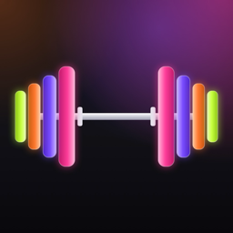

TrackWorkoutDernière mise à jour : 16 octobre 2026
TrackWorkout ne collecte pas vos contenus : vos séances, vos programmes, vos mesures et vos photos de progression restent sur votre iPhone. Pas de compte, pas de publicité, pas de pistage. Seuls les achats d’abonnement sont vérifiés via RevenueCat (voir « Abonnements »).
Elles sont enregistrées uniquement dans l’app, sur votre appareil, et protégées par le chiffrement d’iOS. Elles font partie de la sauvegarde de votre iPhone (iCloud ou ordinateur) si vous l’avez activée ; cette sauvegarde est gérée par Apple. Nous n’y avons jamais accès. Si vous exportez vos données, le fichier est créé sur l’iPhone et partagé uniquement là où vous le choisissez.
Photos : seulement les images que vous choisissez pour vos photos de progression ; elles sont copiées dans l’app et ne sont jamais envoyées. Notifications : programmées localement (minuteur de repos, rappels) ; elles ne quittent pas l’iPhone.
Les achats sont traités par Apple via l’App Store. Nous ne recevons ni vos coordonnées ni vos informations de paiement.
Pour vérifier vos achats et débloquer Premium, l’app utilise RevenueCat (RevenueCat, Inc.). RevenueCat reçoit l’historique de vos achats App Store (produit, date, prix, identifiants de transaction), un identifiant anonyme généré par l’app et des informations techniques (modèle de l’appareil, versions d’iOS et de l’app, pays de l’App Store). Ces données servent uniquement à gérer l’abonnement : elles ne sont pas liées à votre identité et ne servent ni au pistage ni à la publicité. Vos séances, vos photos et vos autres contenus ne sont jamais envoyés. Politique de confidentialité de RevenueCat : revenuecat.com/privacy.
Vous pouvez supprimer vos séances et vos photos dans l’app. Supprimer l’app efface aussi ses données de l’appareil.
Une question ? Écrivez à abbasamyra@icloud.com.
Last updated: October 16, 2026
TrackWorkout does not collect your content: your workouts, programs, measurements and progress photos stay on your iPhone. No account, no ads, no tracking. Only subscription purchases are verified through RevenueCat (see “Subscriptions”).
It is stored only inside the app, on your device, protected by iOS encryption. It is part of your iPhone backup (iCloud or computer) if you have it turned on; that backup is handled by Apple. We never have access to it. If you export your data, the file is created on the iPhone and shared only where you choose.
Photos: only the images you pick for your progress photos; they are copied into the app and never uploaded. Notifications: scheduled locally (rest timer, reminders); they never leave the iPhone.
Purchases are processed by Apple through the App Store. We receive neither your contact details nor your payment information.
To verify your purchases and unlock Premium, the app uses RevenueCat (RevenueCat, Inc.). RevenueCat receives your App Store purchase history (product, date, price, transaction identifiers), an anonymous identifier generated by the app, and technical information (device model, iOS and app version, App Store country). This data is used only to manage your subscription: it is not linked to your identity and is never used for tracking or advertising. Your workouts, photos and other content are never sent. RevenueCat’s privacy policy: revenuecat.com/privacy.
You can delete your workouts and photos in the app. Deleting the app also erases its data from the device.
Questions? Write to abbasamyra@icloud.com.
آخر تحديث: 16 أكتوبر 2026
لا يجمع TrackWorkout محتواك: تمارينك وبرامجك وقياساتك وصور تقدّمك تبقى على الآيفون. لا حساب، ولا إعلانات، ولا تتبّع. لا يُتحقَّق عبر RevenueCat إلا من مشتريات الاشتراك (انظر «الاشتراكات»).
تُحفظ داخل التطبيق فقط، على جهازك، ويحميها تشفير iOS. وهي جزء من النسخة الاحتياطية للآيفون (iCloud أو الكمبيوتر) إن كانت مفعّلة، وتديرها Apple. لا يمكننا الوصول إليها أبدًا. عند تصدير بياناتك يُنشأ الملف على الآيفون ولا يُشارَك إلا حيث تختار.
الصور: فقط الصور التي تختارها لصور التقدّم؛ تُنسخ إلى التطبيق ولا تُرفع أبدًا. الإشعارات: تُجدول محليًا (مؤقّت الراحة والتذكيرات) ولا تغادر الآيفون.
تعالج Apple عمليات الشراء عبر App Store. لا نتلقّى بيانات الاتصال الخاصة بك ولا معلومات الدفع.
للتحقق من مشترياتك وفتح Premium يستخدم التطبيق خدمة RevenueCat (RevenueCat, Inc.). تتلقّى RevenueCat سجلّ مشترياتك من App Store (المنتج والتاريخ والسعر ومعرّفات المعاملات)، ومعرّفًا مجهول الهوية ينشئه التطبيق، ومعلومات تقنية (طراز الجهاز وإصدار iOS والتطبيق وبلد App Store). تُستخدم هذه البيانات لإدارة الاشتراك فقط: لا ترتبط بهويتك ولا تُستخدم للتتبّع أو الإعلانات. لا تُرسَل تمارينك وصورك وسائر محتواك أبدًا. سياسة خصوصية RevenueCat: revenuecat.com/privacy.
يمكنك حذف تمارينك وصورك داخل التطبيق. وحذف التطبيق يمسح بياناته من الجهاز أيضًا.
لديك سؤال؟ اكتب إلى abbasamyra@icloud.com.